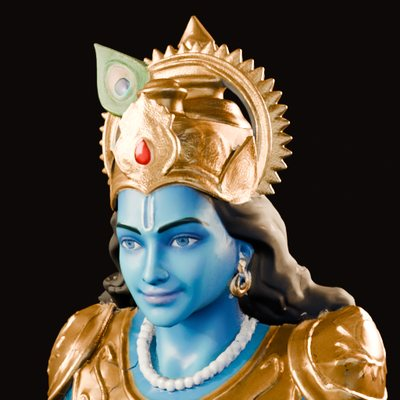
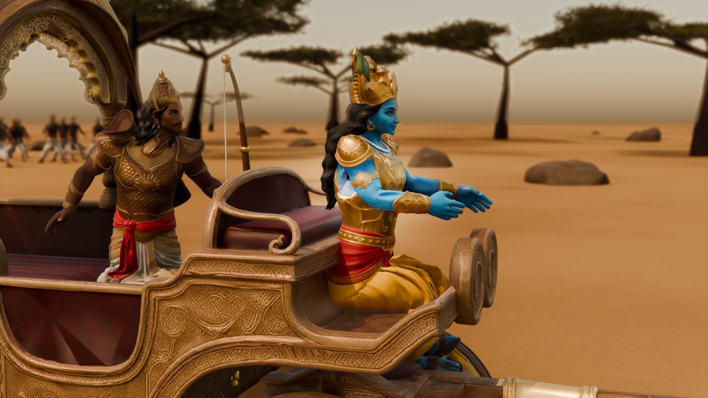
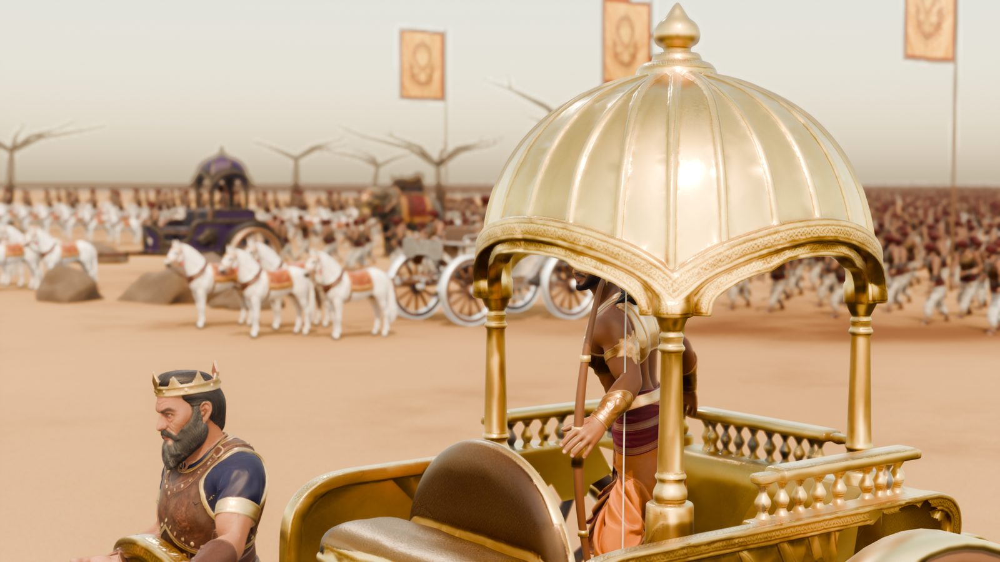
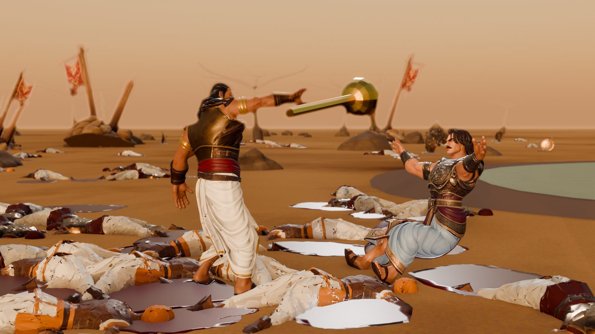

Mensen en goden




Lees over de goden · De campagne · Bronnen en boeken om te lezen
Achttien dagen oorlog. Drie grote duels. Eén wagenmenner.
Download gratis voor Windows“Wat hier staat, is ook elders te vinden. Wat hier niet staat, is nergens.”Over de Mahabharat, in de Mahabharat zelf

Arjun laat zijn boog zakken. Krishn is zijn wagenmenner en spreekt de woorden die duizenden jaren later nog worden gelezen. Jij speelt Arjun: je wisselt van baan, richt met de muis en schiet. De rest van de oorlog zie je als film, verteld door Sanjay aan de blinde koning Dhritrashtr.

Bheeshm is onverslaanbaar, tot Arjun zich inhoudt uit liefde en Krishn een keerpunt afdwingt. Op dag tien volgt de val op het pijlenbed.

Een race tegen de zon voor Jayadrath, en dan Karn: zijn loyaliteit, zijn vloeken en zijn beroep op dharma maken dit duel zwaar. We volgen de vertaling van Kisari Mohan Ganguli en verzinnen geen gebeurtenissen.

Lees over de goden · De campagne · Bronnen en boeken om te lezen
Windows 10 of 11 (64-bit), 8 GB RAM, SSD, DirectX 12-videochip zoals Intel Iris Xe. Ongeveer 30 fps op Laag.
16 GB RAM, SSD, een aparte videokaart zoals een RTX 3060. Ongeveer 60 fps op Hoog.
Een gaminglaptop met een RTX 3060 Laptop-GPU en 16 GB RAM of meer draait het goed op Hoog. Dunne laptops met geïntegreerde graphics: kies Laag.
Ongeveer 2 GB vrij. Zet bij een laptop de lader erin.